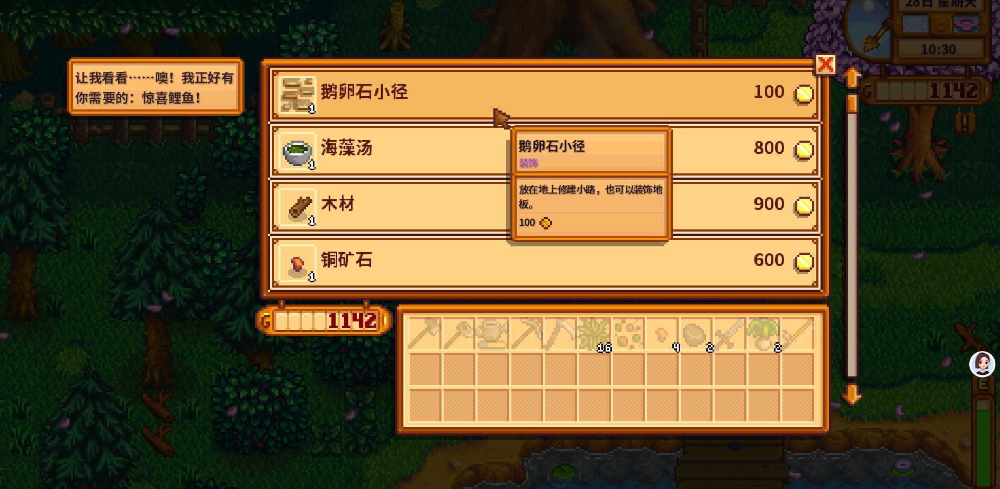
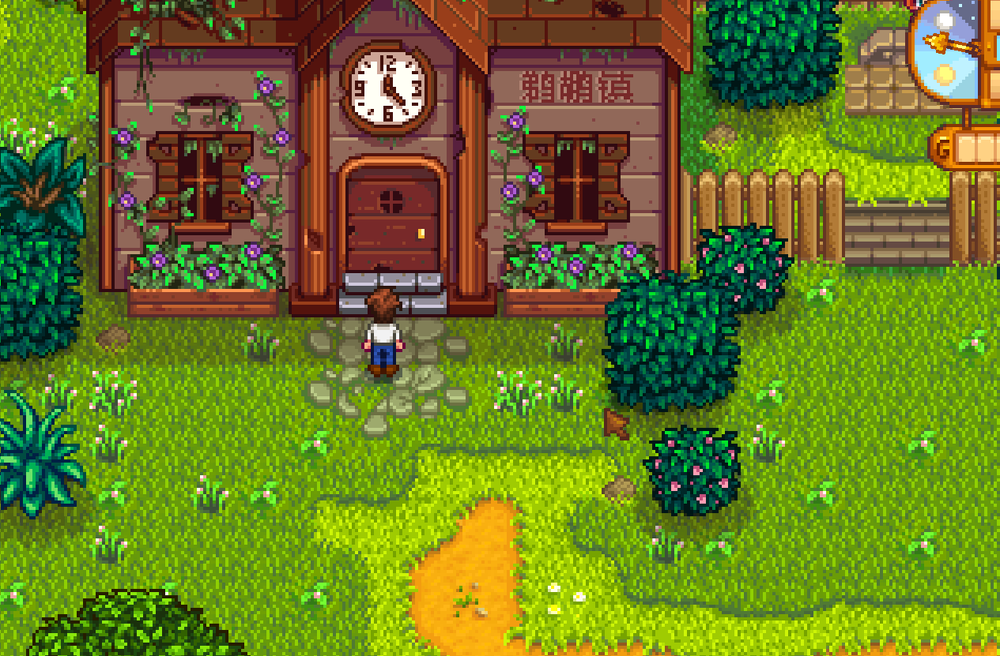

Quick answers (read this first)
- The Traveling Cart appears in Cindersap Forest (south of the farm), near the large lake—not on the mountain path labeled “backwoods.”
- Schedule: Fridays and Sundays (daytime). Miss it and wait for the next cart day.
- Look for a colorful wagon and a pig wearing a hat.
- Default Year 1 rule: browse, do not buy—especially wood, ore, and pathing sold at silly markups.
- Buy only if the item is the last blocker for a high-priority Community Center goal you are already chasing.
Who this is for (and who should skip)
Use this if you keep getting lost looking for the cart, or you emptied your wallet on a “rare” item and then could not buy Summer seeds.
Skip or skim if you already treat the cart as a deliberate bundle finisher and never impulse-buy.
Version note: Modern Stardew Valley (1.6-era QoL). Stock is random; we teach decision rules, not a fake permanent price list.
From our Year 1 save (real pitfalls):
- Cart appears Friday and Sunday only—miss it and you wait for the next window.
- We searched the mountain lake and Backwoods first. Wrong map. Exit south from the farm into Cindersap Forest, then the big lake shore.
- Cart wood looked urgent in the shop UI; our axe was free. Browse is fine—buying wood there once delayed Summer seeds.
Pros & cons of visiting the cart
| Details | |
|---|---|
| Pros | Occasional bundle shortcuts; fun screenshot; teaches map navigation south of the farm. |
| Cons | Easy to waste seed money; FOMO feels urgent even when the item is junk for your stage. |
| Use when | Friday/Sunday mornings after watering, with a clear shopping question. |
| Skip when | You are broke, Exhausted, or the season ends tomorrow and you still need seeds. |
Interactive checklist
Tick as you play. Session-only checkboxes—refresh clears them.
Safe to skip (anti-FOMO)
- Overpriced wood, stone, or ore you can gather yourself.
- Decor paths and furniture in early Year 1.
- “Cool” cooked dishes when you still need Pierre seeds.
- Anything you do not recognize and cannot connect to a current goal.
Decision table: buy or walk away?
| Situation | Buy? | Why |
|---|---|---|
| Item finishes a Pantry / Boiler room you are one slot from completing | Maybe | Time saved can beat farming that slot for weeks |
| You need Summer/Fall seeds this week | No | Seed loop funds everything else |
| Price looks absurd for a basic material | No | Chop, mine, or wait |
| You just want a screenshot / lore moment | Browse only | Looking is free; buying is not |
Real screenshots from our Year 1 save
Cart shop UI on Spring 28 Sunday, plus the nearby ranch landmark on the forest loop.

Game screenshot © ConcernedApe — used for guide commentary

Game screenshot © ConcernedApe — used for guide commentary

Game screenshot © ConcernedApe — used for guide commentary
How to visit the cart (operations)
- Check the calendar: is it Friday or Sunday?
- Water the farm if sunny.
- Exit the farm south between the bushes into Cindersap Forest.
- Walk to the large lake; scan the north/west shore for the wagon + pig.
- Talk to open the shop. Screenshot if you want. Buy only with a written goal in mind.
- Optional: swing by Marnie’s on the way home. Sleep with seed money intact.
Common mistakes
- Searching the mountain “backwoods” path. Wrong forest label in some languages—cart is south of the farm.
- Arriving after dark / wrong weekday. No wagon, wasted walk.
- Buying wood at cart prices. Your axe is cheaper.
- Season-end shopping spree. Spring 28 cart FOMO into empty Summer dirt is a classic reset urge.
- Treating every unique item as mandatory. Unique ≠ useful for your week.
Alternative variations
- Screenshot tourist: Visit for photos only; zero gold spent. Perfect for guide sites and chill runs.
- Bundle sniper: Carry a note of missing high-priority items; buy only matches.
- Hard skip month: Ignore the cart entirely until backpack + watering feel comfortable.
FAQ
Where exactly is the Traveling Cart?
Cindersap Forest, south of your farm, near the big lake. Look for the colorful wagon and the pig.
Does it appear every day?
No. Friday and Sunday are the reliable early-game expectation.
Should new players ever buy from it?
Sometimes—when one purchase finishes a goal you already understand. Not for curiosity alone in week one.
How does this tie to money and bundles?
Early money protects seed loops; Community Center pages tell you which rooms matter. The cart is a shortcut tool, not a second Pierre’s.
Next steps / related pages
Unofficial fan guide. Not affiliated with ConcernedApe.